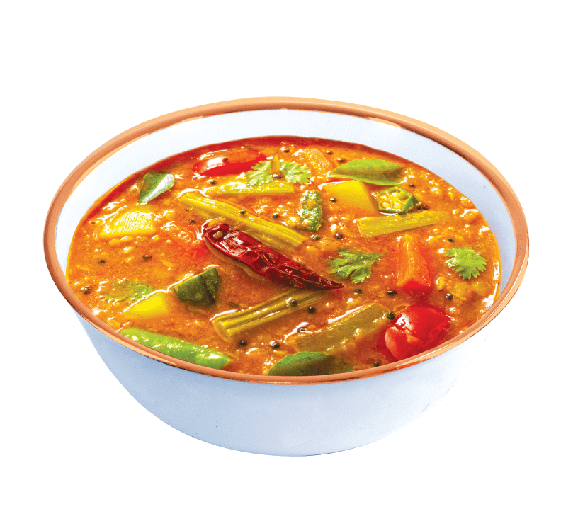

Odin Recipes

Sambar
Description
Sambar is a tangy and spicy South Indian lentil stew, made with toor dal, tamarind, and mixed vegetables. It’s a wholesome dish typically served with rice, idli, or dosa.
Ingredients
- 1 cup toor dal
- Tamarind, lemon-sized ball
- 2 tbsp sambar powder
- 1/2 tsp turmeric
- 1–2 green chilies
- Carrot, drumstick, pumpkin (chopped)
- 1 tomato, chopped
- Salt to taste
- 2 tbsp oil
- 1 tsp mustard seeds
- 1/2 tsp cumin seeds
- 2 dried red chilies
- Curry leaves
- Fresh coriander for garnish
- 4 cups water
Steps
- Cook toor dal until soft.
- Soak tamarind and extract juice.
- Boil vegetables with turmeric and green chilies until tender.
- Add dal, tamarind juice, sambar powder, and salt; simmer 5–10 min.
- Prepare tempering with oil, mustard seeds, cumin, red chilies, and curry leaves; pour into sambar.
- Garnish with coriander and serve hot.
Home